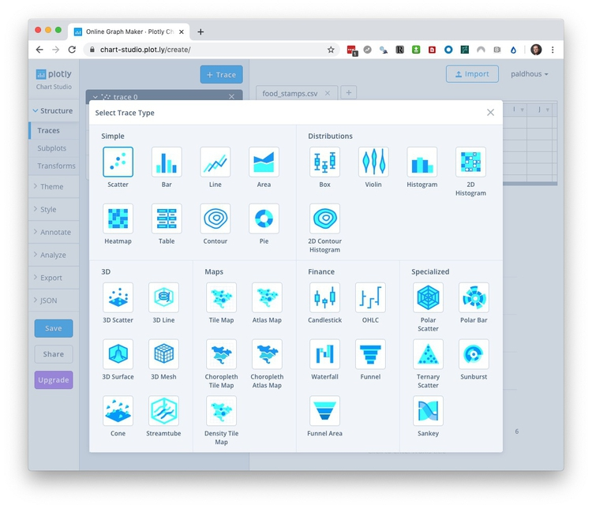
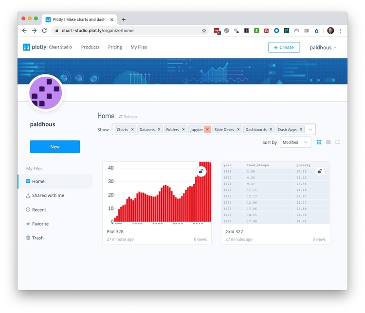
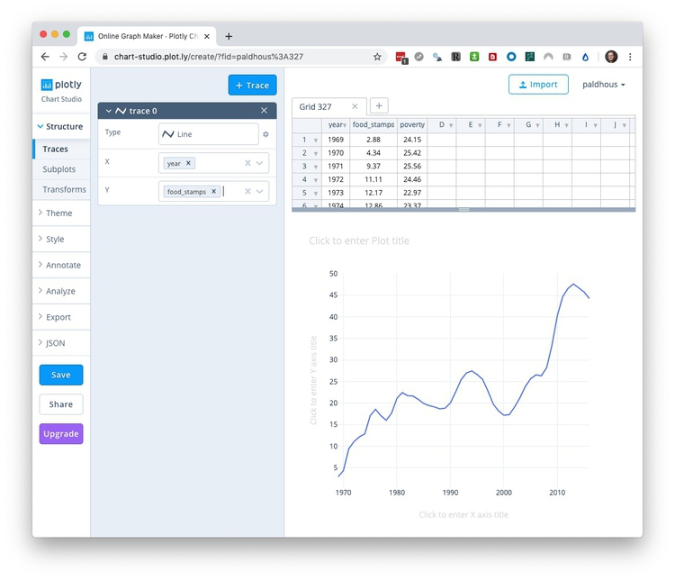
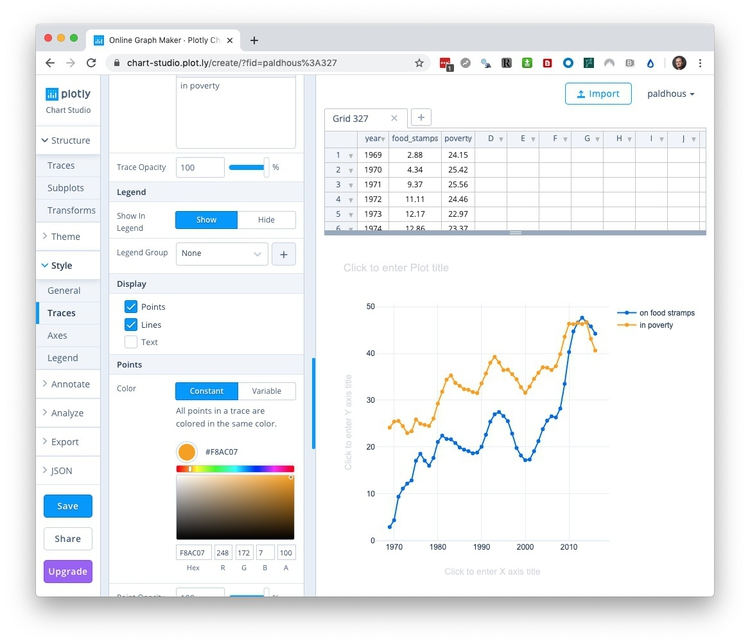
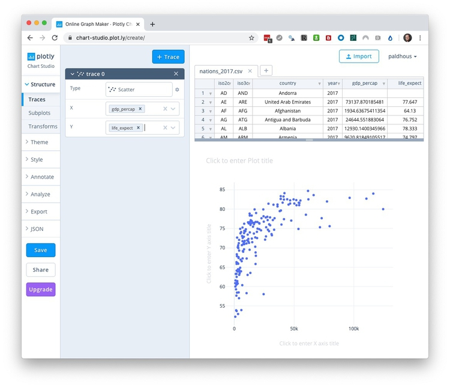
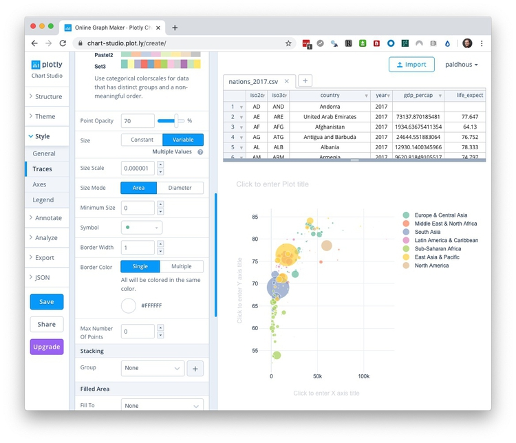

Basic charts with Plotly
Introducing Plotly
In today’s class we will make a series of simple charts using Plotly Chart Studio, a web application that allows you to upload data and use a point-and-click interface to make online charts, with tooltips and other interactivity. These can be embedded in your web projects, or exported as static images.
The data we will use today
Download the data for this session from here, unzip the folder and place it on your desktop. It contains the following files:
food_stamps.csvContains the following variables:yearFrom 1969 to 2016.food_stampsAverage number of people participating in the Supplemental Nutrition Assistance Program, in millions, from the US Department of Agriculture.povertyEstimated number of people in poverty, in millions, from the US Census Bureau.
nations_2017.csvData from the World Bank Indicators portal. Contains the following fields:iso2ciso3cTwo- and three-letter codes for each country, assigned by the International Organization for Standardization.countryCountry name.year2017 for this data.gdp_percapGross Domestic Product per capita in current international dollars, corrected for purchasing power in different territories.life_expectLife expectancy at birth, in years.populationEstimated total population at mid-year, including all residents apart from refugees.regionincomeWorld Bank regions and income groups, explained here.
test.htmlA web page for embedding online charts. It has been set up using the Bootstrap responsive web design framework so that any content will automatically adjust to the size of the browser window in which it is viewed, centered on the page.
Log in to Plotly
Log in to Plotly here:
You should now see a screen like this:

Make a bar chart showing number of people enrolled in food stamps program over time
Having logged in to Plotly, click on the New or + Create buttons and select Chart to see this screen:

The Grid table shows the data to be visualized, so first import the file food_stamps.csv by clicking the Import buttom at top right. This will open the following dialog box:

In the Upload tab, click the Upload button and navigate to the folder containing the file, or drag the file onto the dialog box.
Your workspace should now look like this, with the imported data in a new Grid:

You build charts by adding variables to the plot using the + Trace button. The default is a Scatter plot, but if you click on that box, you will see the other possibilities:

Select Bar and map year onto the X axis and food_stamps onto the Y to create the default chart:
You can build charts with multiple layers, for example here adding a dot-and-line to show the number of people living in poverty, by adding additional Traces. But we will proceed with a simple column chart.
So far we have been working in the Structure section of the main left-hand menu, under the Traces tab. This also contains a Subplots tab, to create multiple charts from different Traces within the same panel; and a Transforms tab, which allows you to Filter, Aggregate (summarize) or Sort the data for a Trace (see the section on basic operations with data from the first class). Split will group the data by a categorical variable.
Having made a basic chart, you can customize it by choosing an overall Theme, and then opening up the options in the Style section of the menu. We will keep the default Theme.
In the Style menu, General contains an option to change the size of the chart. I recommend keeping it set to Auto, as this allows the chart to be responsive, altering its size to fit the available space when embedded into a web page. This section also allows you to add a plot title, and to customize the font faces and size, and to customize the tooltips. If you don’t wish your chart to have tooltips, select Disable under Hover>Mode. We will change the Text>Typeface to Arial, which should display in all browsers when we later download as a web page.
The available options to customize in the Traces tab depend on the chart type. Common options include customizing color and opacity. For bar or column charts you can also change bar widths and the padding around them. We will simply change the default blue color to a bright red, using the HEX value FF0000:
The Axes tab contains options for customizing the X and Y axes. It contains options to set the Range of each axis, to show or hide grid and zero lines under Lines, and to customize Tick Labels and Tick Markers. Range Slider adds a control to adjust the range shown on the X axis, which can be useful to zoom in on the details for very long time series. You will usually want to adjust the axis Titles; Here, edit the Y axis title to Participants (millions).
The Legend tab allows you to customize the color legend for charts that need them, superfluous here.
The Annotate menu allows you to annotate the chart in various ways.
Text allows you to add text annotations.
Shapes provides options to add reference lines or bands to your chart; use in combination with Text as required for chart annotation. (If you need to add a trend line to a scatter plot, use Curve Fitting under the Analyze menu.)
Images allows you to add images, such as an organization’s logo, to a chart.
Having finished customizing your chart, hit the Save button, then save both Plot and Grid as Public (Private is not available for free accounts):
Export and share the chart
Having saved your chart, select the Image tab under the Export export to save it as a PNG image, setting the desired height and width in pixels:

Click Download to save the PNG image file to you computer. (Saving in PDF, SVG, and EPS formats, which will give a graphic that can edited in a vector graphics editor such as Adobe Illustrator, is possible only with a paid account.)
For a simple embed, click the Share button and switch to the Embed tab to obtain an iframe code:

Copy the embed code, then open the test.html file in Sublime Text. Insert the code into the page and edit as follows:
<div class="container">
<iframe width="100%" height="500" frameborder="0" scrolling="no" src="https://plot.ly/~paldhous/328.embed"></iframe>
</div> <!-- /.container -->
An iframe allows you to embed one web page, here displaying your chart on Plotly’s servers, into another. Set its height in pixels, and its width as 100%. This will allow the chart width to adjust for different browser window sizes. You may also need to insert https: at the start of the web address.
A div is a distinct section of a webpage. Insert the iframe into the div with the class container. This is a feature of Bootstrap that will center the embed on you page, optimized for different browser window sizes.
Save the page and open it in your web browser:

A default Plotly embed contains an EDIT CHART link, allowing other users to edit the chart using their own Plotly account. When you hover over the chart, various controls appear at top right.
To obtain an embed without these features, which I would recommend, select Export once more, switch to the HTML tab, and Download as Html file:

Place the downloaded file in your working folder for this class and rename it as food-stamps-column.html. Open in Sublime Text, scroll to the bottom of the file, and edit as follows:
Before:
config: {"showLink": true, "linkText": "Export to plot.ly", "mapboxAccessToken": "pk.eyJ1IjoiY2hyaWRkeXAiLCJhIjoiY2lxMnVvdm5iMDA4dnhsbTQ5aHJzcGs0MyJ9.X9o_rzNLNesDxdra4neC_A"}
After:
config: {"showLink": false, "displayModeBar": false, "linkText": "Export to plot.ly", "mapboxAccessToken": "pk.eyJ1IjoiY2hyaWRkeXAiLCJhIjoiY2lxMnVvdm5iMDA4dnhsbTQ5aHJzcGs0MyJ9.X9o_rzNLNesDxdra4neC_A"}
Now open test.html once more and edit the iframe to embed the downloaded web page:
<div class="container">
<iframe width="100%" height="500" frameborder="0" scrolling="no" src="food-stamps-column.html"></iframe>
</div> <!-- /.container -->
You should now have the following clean embed:
Make a dot-and-line chart comparing number of people in poverty with number on food stamps over time
Click your browswer’s back arrow to return to your account’s home page:

Now hover over the grid with the food stamps data, and click on Open in: Editor to start making a new chart from the same data.
This time, select Line for the first Trace, and put food_stamps on the Y axis and year on the X:

Now click the + Trace button to add a second line, and edit so that poverty is mapped to the Y axis.
Change the Typeface to Arial as before under the General in the Style menu.
Under Traces in the Style menu, select the By Type tab check Points. (With multiple traces, you can also use the Individually tab to customize them one at a time.) Once you add points to a line chart, Plotly should automatically adjust the Y axis to start at zero.
By default, Plotly has chosen a qualitative palette for categorical scales; you can use the Individually tab to customize the color of each trace individually if you wish. Here I have chosen blue and orange, at opposite sides of the color wheel, and also labelled each Trace:

Switch to Axes, and edit the Y axis title to People (millions):
Select Legend, and adjust its Positioning, Orientation and Trace Order as desired:

Save the chart and then export/share as before.
Make a bubble chart showing the relationship between GDP per capita and life expectancy for the world’s nations in 2017
Click your browser’s back arrow to return to your account’s home page, then select Create>Chart to open a new blank grid. Import the nations_2017.csv file:

Add a Trace the default Scatter plot and map gdp_percap onto the X axis and life_expect onto the Y:

To color the circles by region, select Transforms under the Structure menu, click + Transform, select Split, and split by region to color the countries by their region.
Under General in the Style menu, set the Typeface to Arial.
In the Style menu under Traces, select the By Type tab, click on the color palette under Points and select Set2, which is a ColorBrewer palette.

Scroll further down to select Variable under Size and in the Choose data box select Population to size the circles by the countries’ populations.

Scroll further down to select country under Text and check Text under Hover/Tooltip Text so that the tooltip shows country names, as well as the values on the X and Y axes.

Under Axes, edit the axis titles, and to mimic the appearance of the chart we saw in the Gapminder video switch the Axis Type to Log for the X axis under Range. For the X axis, also add a Prefix of $ under Tick Labels:

Under Legend adjust the orientation and position of the legend:
Save the chart, and then export/share as before.